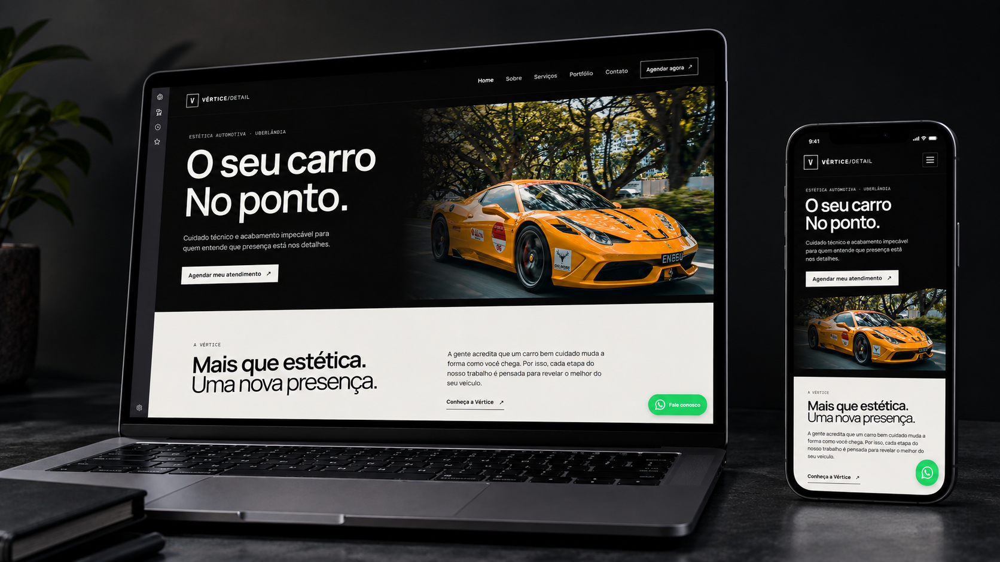
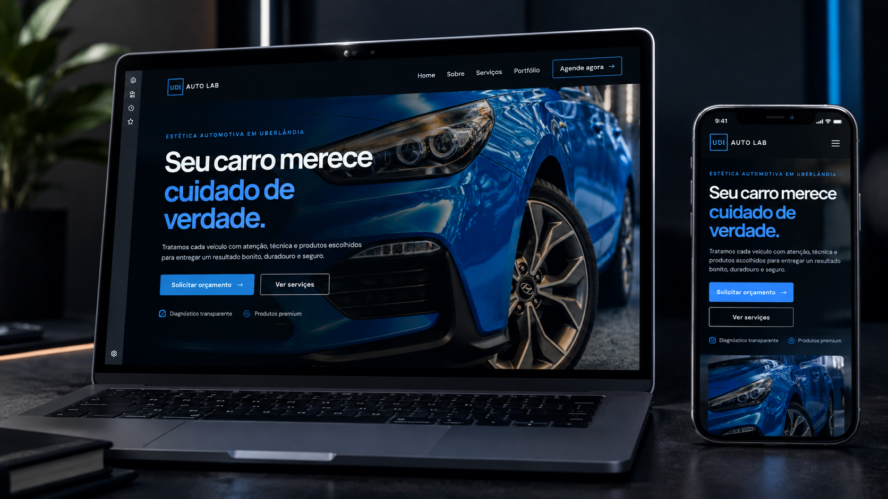
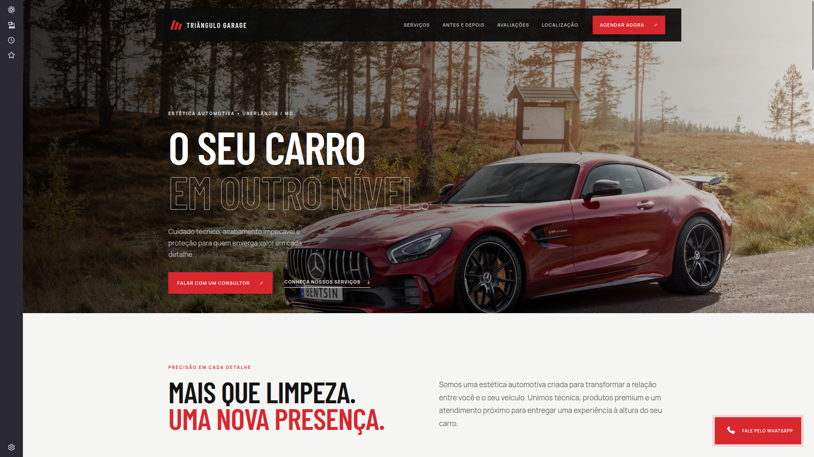

Vértice Detail
Site institucional desenvolvido para apresentar uma empresa de estética automotiva, seus serviços, diferenciais e canais de contato.
Ver siteDesenvolvo sites institucionais e landing pages para empresas que querem fortalecer sua presença digital, apresentar seus serviços e facilitar o contato com novos clientes.
Projetos desenvolvidos para demonstrar diferentes abordagens de presença digital para negócios locais.

Site institucional desenvolvido para apresentar uma empresa de estética automotiva, seus serviços, diferenciais e canais de contato.
Ver site
Projeto institucional criado para apresentar a identidade da empresa, seus serviços e diferenciais de forma clara e profissional.
Ver site
Landing page de uma única página, estruturada para apresentar os serviços da empresa e direcionar o visitante para o contato.
Ver siteUm site não precisa apenas existir. Ele precisa comunicar, transmitir confiança e facilitar o próximo passo.
Soluções digitais pensadas para diferentes momentos e necessidades do seu negócio.
Uma presença digital completa para apresentar sua empresa, serviços, diferenciais, localização e canais de contato.
Uma página objetiva, construída para apresentar uma oferta ou serviço e conduzir o visitante até uma ação.
Páginas desenvolvidas para conectar sua marca às redes sociais e facilitar o acesso dos clientes às informações do negócio.
Um processo simples e transparente para transformar as necessidades do seu negócio em uma presença digital profissional.
Entendemos seu negócio, seus serviços, seu público e o que você espera do site.
Organizamos as informações e definimos a melhor estrutura para apresentar sua empresa.
O projeto é desenvolvido com foco em desempenho, responsividade e experiência.
Após os ajustes finais, colocamos o site no ar para que sua empresa possa utilizá-lo.
Meu objetivo é criar experiências digitais que façam sentido para quem está do outro lado da tela.
Sou Aquila, desenvolvedor focado na criação de sites institucionais e landing pages para empresas e negócios locais.
Cada projeto é pensado para equilibrar identidade visual, clareza das informações, experiência em dispositivos móveis e facilidade de contato.
Se você está pensando em criar ou renovar o site da sua empresa, vamos conversar sobre o projeto.